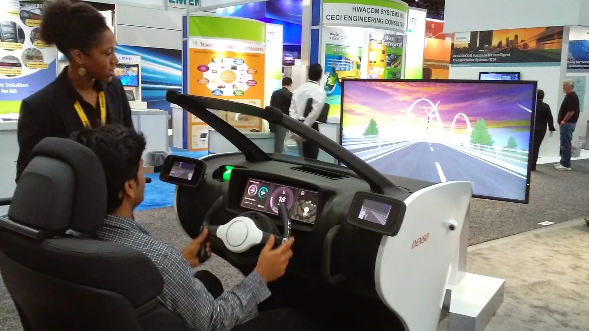
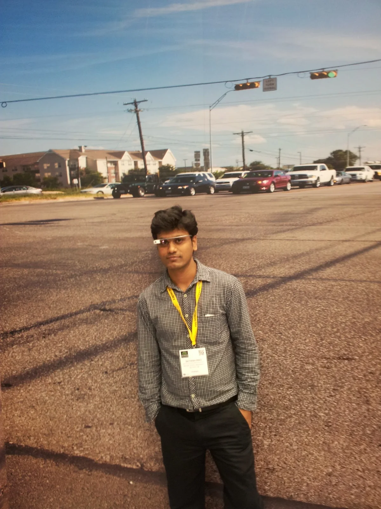
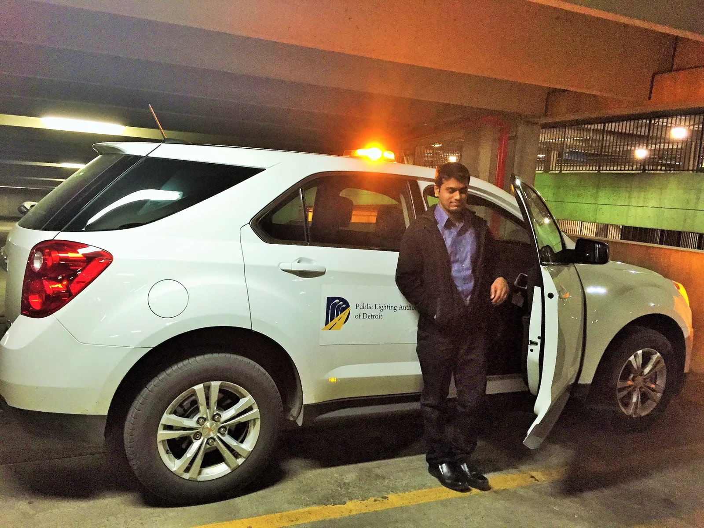
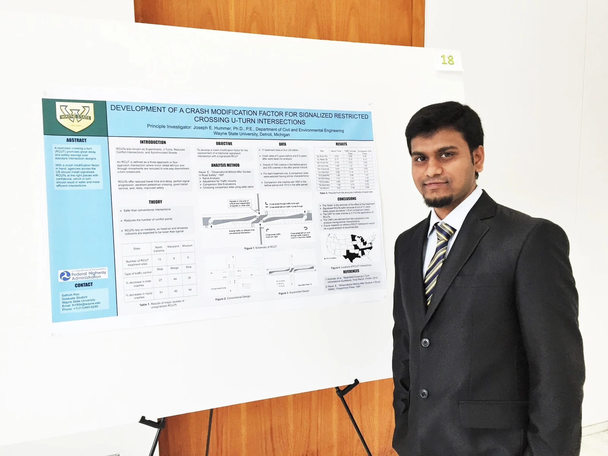
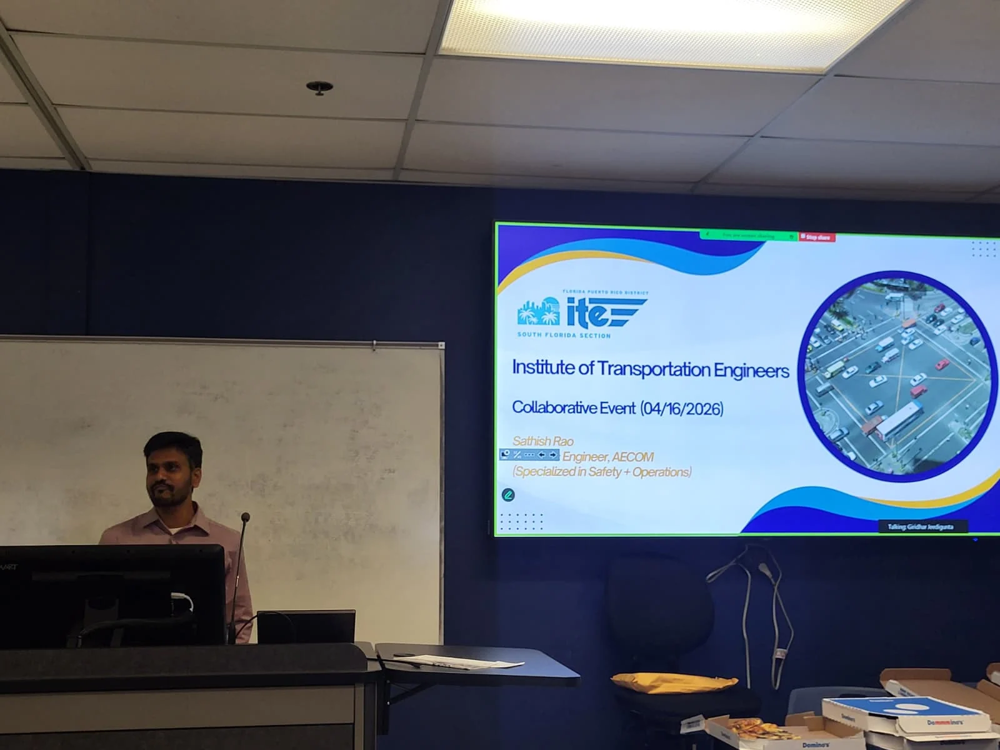
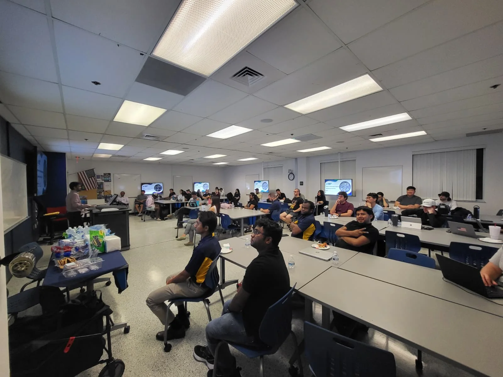

Large-scale traffic operations
Embedded traffic-operations work supporting a network of approximately 1,100 signals, including real-time incident response, signal timing adjustments, corridor management and operational troubleshooting.
TRANSPORTATION ENGINEERING · ITS · TSMO · SAFETY
Sathish Rao is a transportation engineering professional specializing in Intelligent Transportation Systems, Transportation Systems Management and Operations, real-time traffic management, advanced signal operations and traffic safety.
01 — BIOGRAPHY
My professional work centers on Intelligent Transportation Systems (ITS), Transportation Systems Management and Operations (TSMO), real-time traffic management, traffic signal systems, traffic safety and data-driven transportation engineering.
Across state, county and municipal transportation environments, I have worked at the intersection of engineering, technology and operations — translating complex transportation data into practical improvements in mobility, safety, reliability and system performance.
My career includes embedded roles supporting government transportation agencies, large-scale signal operations, safety engineering, transportation research and project management. I also contribute to the profession through research, technical leadership, professional associations, judging and speaking.
02 — LEADERSHIP
Embedded traffic-operations work supporting a network of approximately 1,100 signals, including real-time incident response, signal timing adjustments, corridor management and operational troubleshooting.
Advanced traffic-management and signal-operations work across government transportation environments, combining engineering analysis with real-time system performance.
Expert judging for the ITE scholarship award and leadership through the ITE South Florida Section Talent Recognition Committee, alongside ITS America committee and working-group service.
Invited as a featured expert speaker at an ITE South Florida Section collaborative event at Florida Atlantic University in April 2026 on real-time traffic operations using advanced traffic-management systems.


03 — PROFESSIONAL STANDING
ITE South Florida Section, ITS America, IMSA and PMI — with committee, working-group and professional service responsibilities.
View memberships →Expert judge for the ITE Scholarship Award and Talent Recognition Committee Chair for the ITE South Florida Section.
View service →Transportation safety research on RCUT intersections, including empirical crash evaluation and Crash Modification Factor development.
View research →Scholarly transportation research distributed through federal, TRB and other research channels, with an active Google Scholar and ResearchGate presence.
Research archive →Embedded and senior transportation operations roles supporting public agencies, large signal networks, safety programs and complex engineering delivery.
View impact →03 — IMPACT ACROSS ORGANIZATIONS
Senior traffic engineering and deputy project management responsibilities supporting TSMO and ITS functions, signal timing optimization, ATSPM performance and agency operations.
Embedded traffic operations supporting real-time management, signal timing, CCTV-based incident response, diversion strategies and large-scale signal coordination.
$7.4M estimated Palm Beach County NPV savings.
Transportation safety, signal retiming, operational analysis, field reviews, crash-pattern evaluation, corridor studies and engineering recommendations delivered across FDOT Districts 2, 4 and 6.
Research evaluating Restricted Crossing U-Turn intersections and developing a Crash Modification Factor, connecting empirical crash analysis to broader transportation-safety practice.
Travel-time, delay, level-of-service and reserve-capacity analysis supporting mobility evaluation and operational understanding along US-1.
Traffic impact, operational and capacity analysis for key urban intersections using field reviews, Synchro/SimTraffic and engineering evaluation.
Signal-network operations, troubleshooting, timing improvements, public-response coordination, field-device support and real-time operational oversight.
Traffic analysis, corridor evaluation, signal timing, travel-time studies and operational improvements supporting state, county and municipal transportation agencies.
Project coordination, engineering reports, stakeholder communication, benefit/cost analysis, NPV evaluation, quality control and multidisciplinary transportation delivery.
04 — CAREER JOURNEY
Senior Traffic Engineering Consultant / Deputy Project Manager supporting TSMO, ITS, signal performance, ATSPM response and regional traffic operations.
Real-time traffic operations, signal timing, incident management, corridor retiming, performance analysis and operational improvements across a network of approximately 1,100 signals.
Traffic-safety and operational improvement programs involving crash analysis, signal retiming, engineering recommendations, benefit/cost evaluation and agency review.
Roadway, pedestrian and bicycle safety initiatives, fatal-crash reviews, operational studies, concept development and project prioritization across a broad program of locations.
Signal retiming, traffic safety, transit signal priority, operational analysis, corridor studies and multidisciplinary transportation consulting across public-agency programs.
Countywide traffic-signal operations, troubleshooting, timing improvements, field-device coordination, agency communications and operational research.
Capital-program delivery, GIS mapping, operational planning and implementation support associated with large-scale public infrastructure modernization.
RCUT and innovative-intersection safety research involving multi-state DOT coordination, statistical crash evaluation and development of evidence supporting federally sponsored transportation research.
Business analysis, competitive intelligence, pricing strategy and performance metrics supporting data-driven operational and management decisions.
Infrastructure and real-estate project delivery through engineering coordination, planning, cost analysis, documentation, client-facing execution and project reporting.

05 — RESEARCH & AUTHORSHIP
Research focused on before-and-after crash evaluation and development of a Crash Modification Factor. The supplied research record reports approximately 0.85 for total crashes and 0.78 for injury crashes.

Research record and federal transportation-library references supporting the safety evaluation and CMF work.
Central profile for publications, research records and scholarly collaboration.
Open ResearchGate ↗Central scholarly profile for citation and publication discovery.
Open Google Scholar ↗06 — RECOGNITION & PROFESSIONAL SERVICE
Invited as a featured expert speaker at a collaborative ITE event at Florida Atlantic University, presenting on “Real-Time Traffic Operations Using Advanced Traffic Management Systems.”
Invited to serve as an expert judge for the ITE scholarship award, evaluating candidates within the transportation-engineering profession.
Federal Highway Administration research grant associated with transportation-safety research.


07 — PROFESSIONAL MEMBERSHIPS
Member · Talent Recognition Committee Chair
Selected by ITE South Florida Section leadership for committee leadership and professional recognition activities.
ITE ↗Member · Standing Committees & Working Groups
Professional involvement through subject-matter participation in transportation technology, policy and industry discussions.
ITS America ↗Operational Member · IMSA III
Professional involvement in public-safety operations, traffic signal systems and technical practice.
IMSA ↗Member · Project Management Professional (PMP)
Professional project-management membership and credential supporting complex transportation-project delivery.
PMI ↗08 — MEDIA & PUBLIC VISIBILITY
09 — CREDENTIALS
ENGINEERING PHILOSOPHY
“The strongest transportation solutions are the ones that turn engineering evidence into measurable improvements for the traveling public.”
10 — CONTACT
For professional inquiries, transportation engineering collaboration, research, speaking opportunities or project discussions.